| # | BID | Beatmap Info | CS | HP | OD | AR | Hit Length | BPM | Stars | Notes |
|---|---|---|---|---|---|---|---|---|---|---|
| 1 | 1791443 | 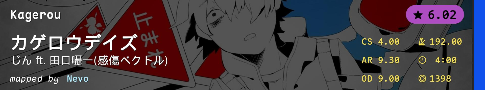 | 4.00 | 6.00 | 9.00 | 9.30 | 4:00 (1398x) | 192.0 | 6.02 | 让我看看NM1是什么东西 |
| 2 | 4503941 | 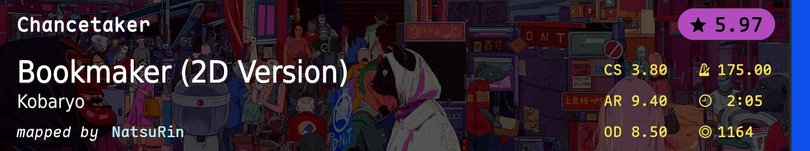 | 3.80 | 5.00 | 8.50 | 9.40 | 2:05 (1164x) | 175.0 | 5.97 | 我的NM2你不打SS不准发 |
| 3 | 3296922 | 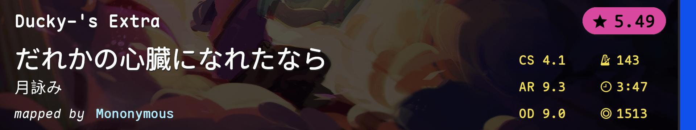 | 4.10 | 5.50 | 9.00 | 9.30 | 3:47 (1513x) | 143.0 | 5.49 | 小于175全都是alt |
| 4 | 3877400 | 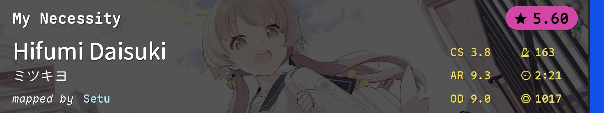 | 3.80 | 5.00 | 9.00 | 9.30 | 2:21 (1017x) | 163.0 | 5.6 | 我肯定是不想看到这么个图在NM4... |
| 5 | 3681517 | 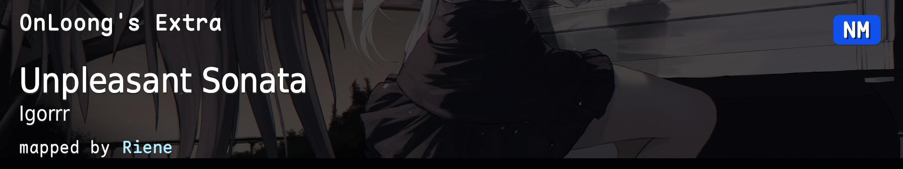 | 3.80 | 4.50 | 8.50 | 9.40 | 2:04 (1238x) | 224.0 | 6.08 | NM是speed了啊 |
| 6 | 3588149 | 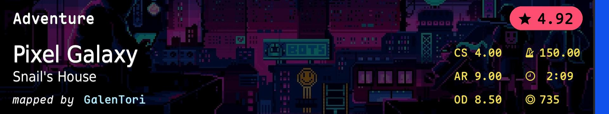 | 4.00 | 7.00 | 8.50 | 9.00 | 2:09 (735x) | 150.0 | 4.92 | NM6是tapping gimmick |
| 7 | 2796075 | 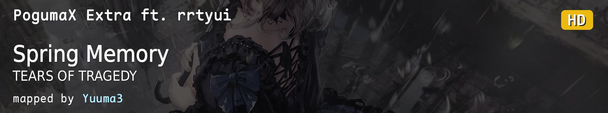 | 3.80 | 5.80 | 8.50 | 9.20 | 3:54 (1525x) | 190.0 | 5.67 | 我HD1呢 |
| 8 | 4043999 | 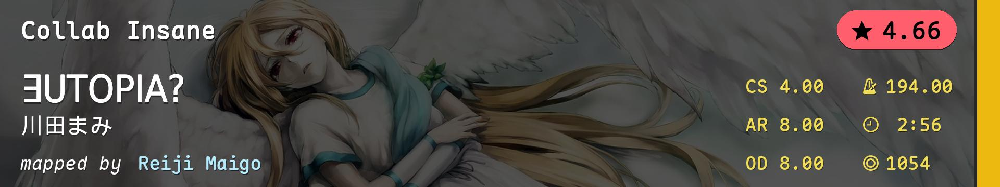 | 4.00 | 5.00 | 8.00 | 8.00 | 2:56 (1054x) | 194.0 | 4.66 | 这HD2这么寸止 |
| 9 | 3756543 | 4.00 | 5.50 | 8.70 | 9.30 | 2:15 (982x) | 172.0 | 5.45 | HD3中间那段我感觉有点read的 | |
| 10 | 1820338 | 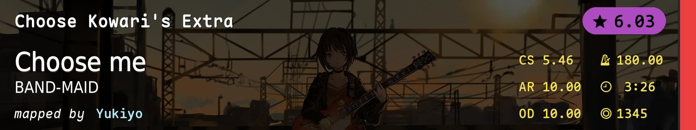 | 5.46 | 8.12 | 10.00 | 10.00 | 3:26 (1345x) | 180.0 | 6.03 | DT1分是HR1的两倍 |
| 11 | 438732 | 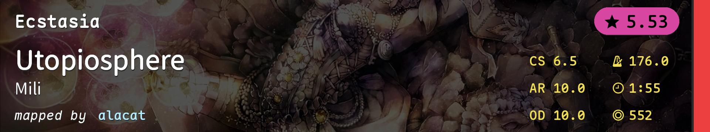 | 6.50 | 8.40 | 10.00 | 10.00 | 1:55 (552x) | 176.0 | 5.53 | HR2和HD2连一起的 |
| 12 | 944717 | 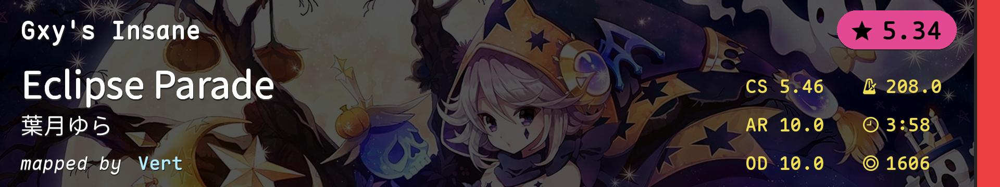 | 5.46 | 9.80 | 10.00 | 10.00 | 3:58 (1606x) | 208.0 | 5.34 | HR3是rhythmic |
| 13 | 1040239 | 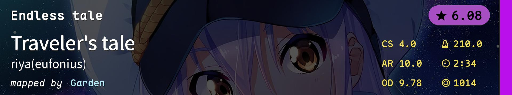 | 4.00 | 6.50 | 9.78 | 10.00 | 2:34 (1014x) | 210.0 | 6.08 | 继续送送温暖 |
| 14 | 4363260 | 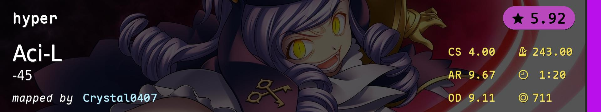 | 4.00 | 4.00 | 9.11 | 9.67 | 1:20 (711x) | 243.0 | 5.92 | 相当于NM5把DT2顶掉了 |
| 15 | 3335524 | 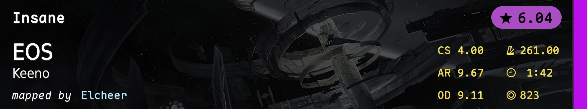 | 4.00 | 5.00 | 9.11 | 9.67 | 1:42 (823x) | 261.0 | 6.04 | 这DT3 REALLY? |
| 16 | 4069960 | 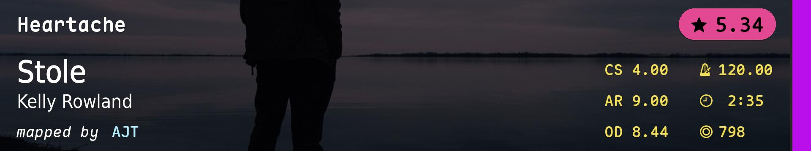 | 4.00 | 4.00 | 8.44 | 9.00 | 2:35 (798x) | 120.0 | 5.34 | 590COMBO处有梗 |
| 17 | 3951855 | 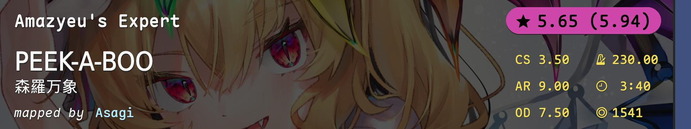 | 3.50 | 4.00 | 7.50 | 9.00 | 3:40 (1541x) | 230.0 | 5.65(5.94) | 这HD真比HR难吧 |
| 18 | 3636000 | 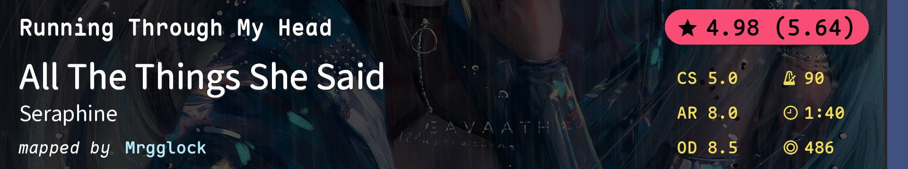 | 5.00 | 5.50 | 8.50 | 8.00 | 1:40 (486x) | 90.0 | 4.98(5.64) | FM2和NDC的GS1选重了 |
| 19 | 3022593 | 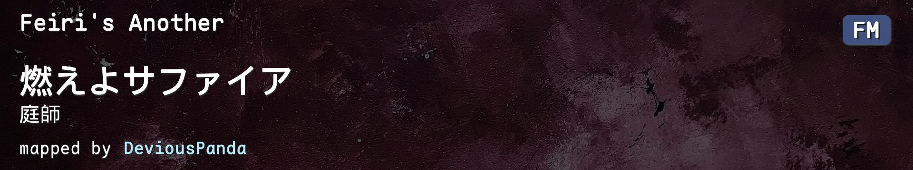 | 4.00 | 4.20 | 8.00 | 9.20 | 2:03 (991x) | 175.0 | 5.34(5.58) | 我有点想把那个搬出来 |
| 20 | 734927 | 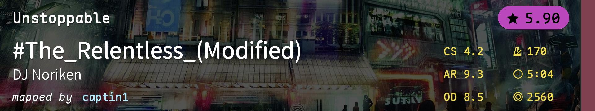 | 4.20 | 6.00 | 8.50 | 9.30 | 5:04 (2560x) | 170.0 | 5.9 | A map. |